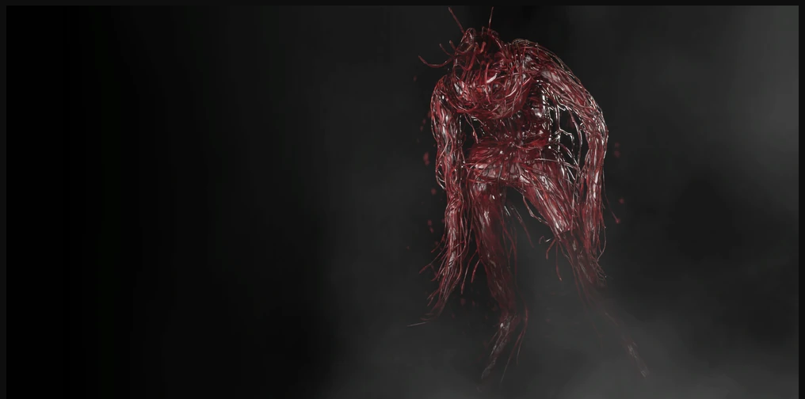
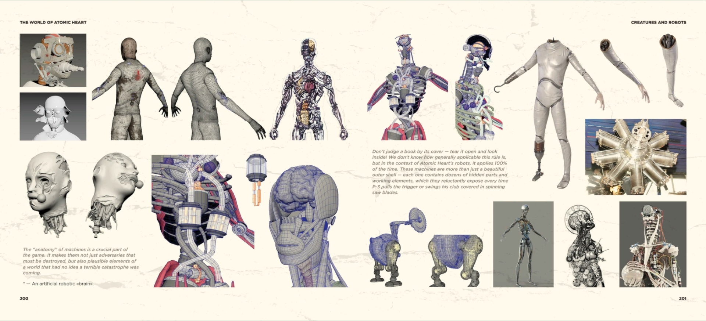

Atomic Heart
Pavlov Complex / Organic Production Assets
Органические и биомеханические ассеты, полимерные формы, биомасса, пропсы, доработка материалов, технический cleanup и подготовка для Unreal Engine.
Senior 3D Artist / Technical 3D Artist
Я создаю production-ready 3D-ассеты для игр: органические формы, биомеханические структуры, мутировавшие поверхности, материалы, пропсы, элементы окружения и ассеты, подготовленные для Unreal Engine.
Обо мне
Моя сильная сторона — умение наблюдать реальные структуры и переводить их в оригинальный 3D-дизайн. Я изучаю слои камня, прожилки листьев, корни, рисунок песка, эрозию, твёрдые природные поверхности, биологические формы, сосудистые системы и органический рост, а затем превращаю это в силуэты, детали поверхности, логику материала и игровые ассеты.
Я начал изучать цифровую графику примерно с 16 лет: Alias Maya, ранние версии 3ds Max, цифровой рисунок, визуальные эксперименты в духе Winamp-эпохи, а позже — профессиональные игровые пайплайны.
Работы
Atomic Heart
Органические и биомеханические ассеты, полимерные формы, биомасса, пропсы, доработка материалов, технический cleanup и подготовка для Unreal Engine.
Органические формы
Органические, кроваво-полимерные, сосудистые и мутировавшие формы для real-time game production.
Creature & Biomechanics
Работа с anatomy-like формами, синтетическими структурами, ритмом поверхности, силуэтом и production-ready исполнением.
Natural Form Design
Слои камня, прожилки листьев, корни, песчаные структуры, эрозия и биологический рост как база для оригинального языка 3D-формы.
Галерея




Case Library
Карточки объясняют, что именно было сделано в каждой задаче: роль, процесс, tools, оптимизация и production setup. Основные блоки с органикой выше не заменяются.
Навыки
Моделинг, скульптинг, ретопология, UV cleanup, baking support, текстуры, материалы, оптимизация, LOD, коллизии и финальная проверка ассетов.
Корни, сосудистые структуры, полимерные поверхности, мутировавшие материалы, creature-related ассеты, анатомическая и биологическая логика поверхностей.
Подготовка ассетов, настройка материалов, Blueprint/prefab-style сборка сцен, оптимизация, коллизии, LOD, lightmaps и валидация в движке.
Контакт
Freelance, игровые ассеты, органические формы, материалы и подготовка контента для Unreal Engine.